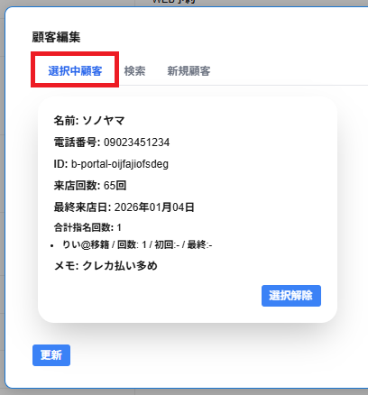

選択中顧客のタブを選択すると、現在選択中の顧客が表示されます。
・名前
顧客の名前が表示されます。
・電話番号
電場番号を登録している場合、電話番号が表示されます。
登録していない場合は、未入力と表示されます。
・ID
IDを登録している場合、IDが表示されます。
登録していない場合は、未入力と表示されます。
・来店回数
店舗へ来店された回数が表示されます。
・最終来店日
店舗へ来店された直近の日付・日時が表示されます。
以下の情報は該当の予約・接客に登録されているキャストに関連する顧客について表示されます。
・合計指名回数
対象のキャストの指名回数が表示されます。
キャスト名/ 回数 / 初回/ 最終の項目が表示されます。
回数の欄には表示されているキャストの接客した回数が表示されます。
初回の欄には表示されているキャストが初めて接客をした年月日が表示されます。
※ない場合は-と表示されます。
最終の欄には表示されているキャストが直近で接客をした年月日が表示されます。
※ない場合は-と表示されます。
※来店回数が0回で、合計指名が0回の場合は合計指名回数の項目は表示されません。
※出禁として登録されている顧客の場合、合計指名回数の下側に出禁と表示されます。
・メモ
入力したメモが表示されます。
メモがない場合は無しと表示されます。
・選択解除
選択解除をクリックすると、顧客の選択を解除できます。
顧客の表示が1つの場合は選択解除をすることができません。
